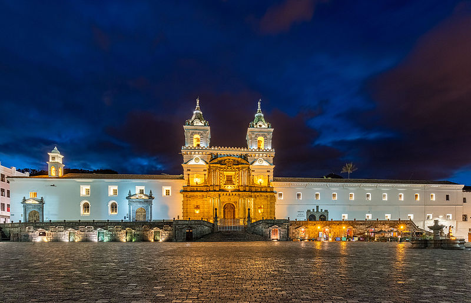

Lindo Quito de Mi vida
Primer grito de independencia
Quito, oficialmente San Francisco de Quito, es la capital de la República del Ecuador, de la Provincia de Pichincha y la capital más antigua de América del Sur.

Quito
Por qué se dice que es la ciudad del primer grito de la independencia?
- El 10 de agosto de 1809, marcó el inicio del proceso de Independencia del Ecuador. Ese día fue destituido el Presidente de la Real Audiencia de Quito
- De inmediato las autoridades españolas (peninsulares) dispusieron eliminar la rebelión movilizando tropas desde Guayaquil, Popayán y Pasto con la misión de tomar Quito y acabar con los insurrectos.
Proceres y Lugares Importantes
- Manuela Cañizares
- Palacio República
- Juan Pio Montúfar